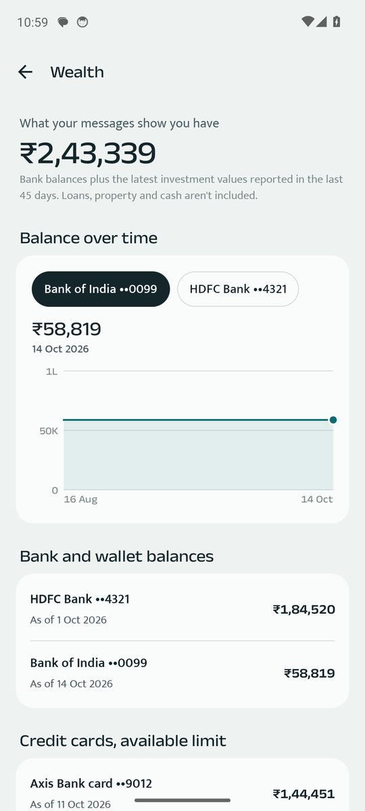
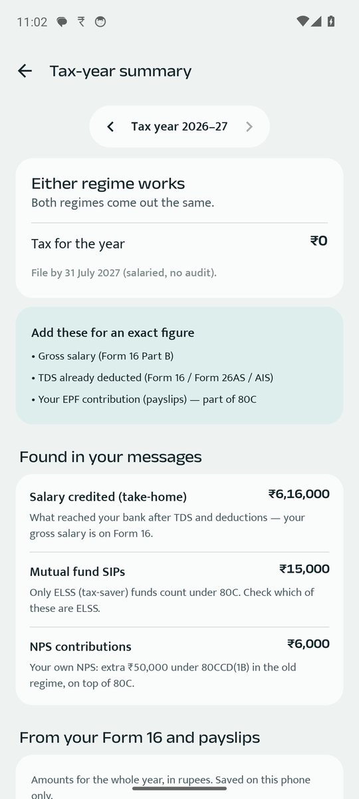

Your whole financial picture, kept on your phone
FinInsight AI brings your bank accounts, cards, income, investments and dues together — from the messages your banks already send — without asking for a single password.


Multiple bank accounts and cards, one dashboard
- Bank balances and credit-card limits, updated as new messages arrive
- One account, a few, or all — look at HDFC alone, or HDFC and SBI together
- Duplicate accounts joined, so the same card never appears twice
- Friends & family, groups and trips for shared spending
Income, spending and investments, kept apart
Salary, interest, refunds, spending, SIPs, RDs and other investments are recognised and kept separate, so you can see what came in, what went out and what you invested in any month, quarter, year or financial year. Month-on-month and year-on-year comparisons show the trend, and the wealth view adds it all up.
Tax-year summary
For the Indian financial year — for example FY 2025-26 (AY 2026-27) — FinInsight brings together your salary, interest and common deduction items such as 80C and 80D payments, and compares the old and new tax regimes — a useful starting point before you file or speak to your CA.
AI insights that show their working
A money score out of 100, a month-end forecast, subscriptions found and a plain-words Ask bar — "How much did I spend on food last month?" Every number can be tapped to see the exact transactions behind it. All of it is worked out on your phone; nothing is sent to a cloud AI service.
Cash flow, month by month
See money in and money out for every month side by side: salary and other income, spending, investments and what you kept. It's the cash-flow view a financial planner would draw up — built from your own messages, for you alone, or for the family if you track shared accounts together.
How FinInsight compares
| FinInsight AI | Manual expense apps | Spreadsheets | Bank-login apps | |
|---|---|---|---|---|
| Records payments for you | ✓ from bank SMS | ✗ type each one | ✗ type each one | ✓ |
| Needs bank login or password | ✗ never | ✗ | ✗ | ✓ required |
| Your data leaves the phone | ✗ never | Often (cloud sync) | Often (cloud) | ✓ to their servers |
| Budgets, forecasts and insights | ✓ | Some | Build it yourself | Some |
| Scam SMS warnings | ✓ | ✗ | ✗ | ✗ |
Questions
Do I have to connect my bank account?
No. FinInsight never asks for bank logins or passwords. It works from the SMS your banks already send.
Does it track investments?
It recognises SIPs, RDs and other investments from your messages and keeps them separate from spending.
Is the tax summary a tax filing?
No — it's a summary to help you prepare. Check the final figures with your Form 16, AIS or tax adviser.
Can I back up and move to a new phone?
Yes. Make an encrypted backup with your own password and restore it on the new phone.